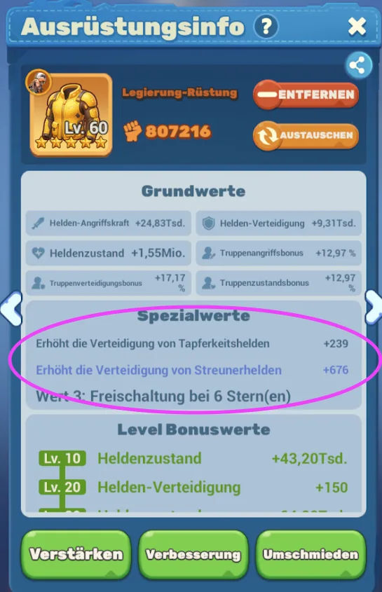
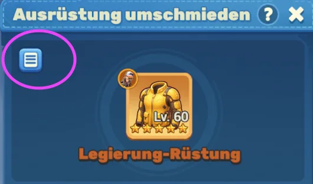
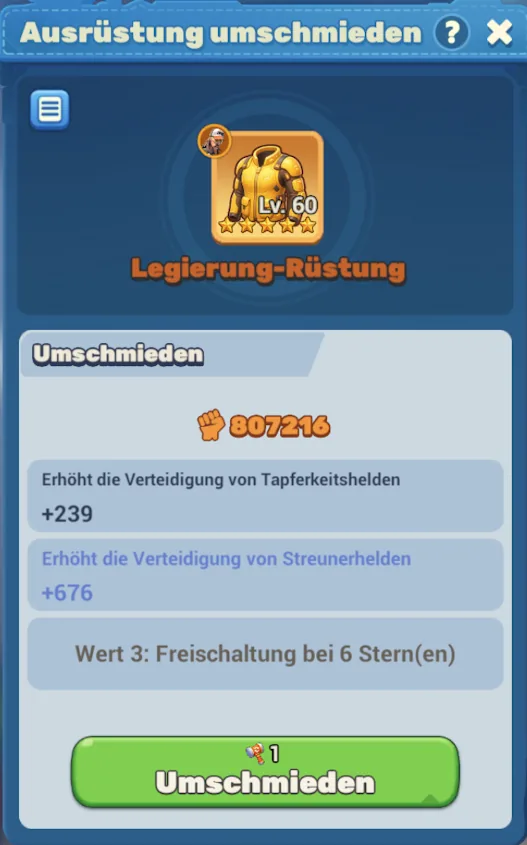
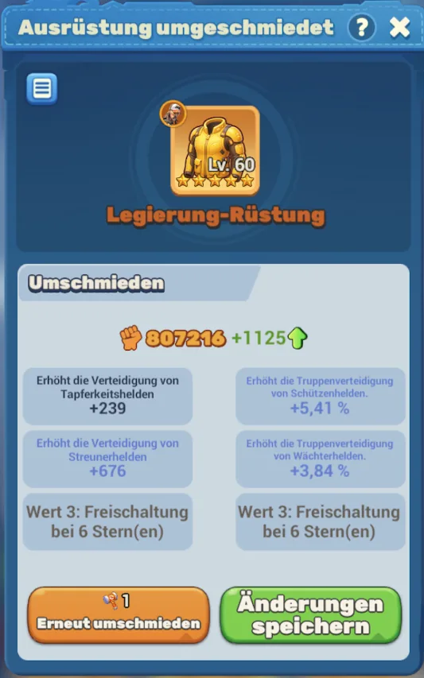
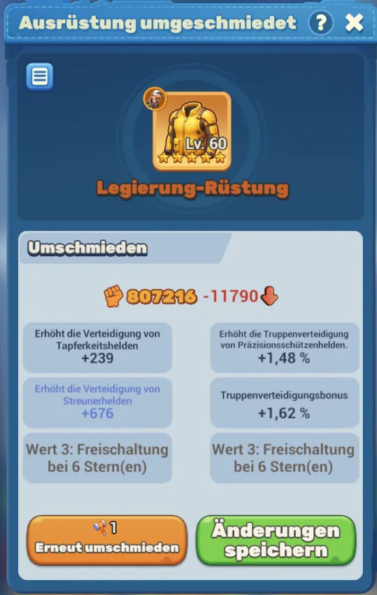
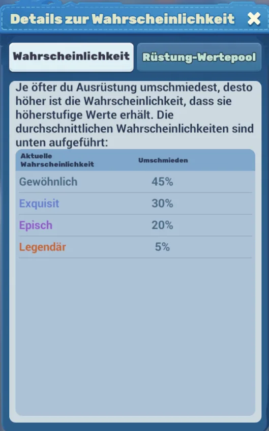
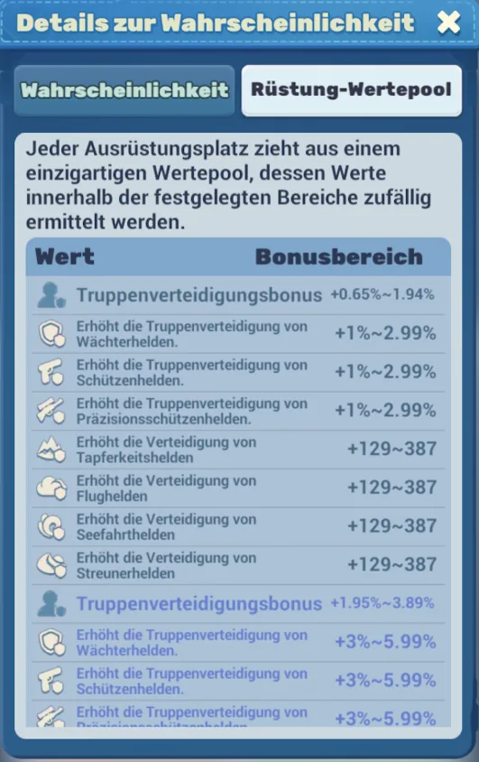

🔨 Rüstung umschmiedenReforging armorReforger une armureRiforgiare l'armaturaReforjar armaduraReforjar armaduraZırhı yeniden dövmeПерековка брони
Aus einer verstärkten goldenen Rüstung holst du mit dem Hammer zusätzliche Spezialwerte heraus. Das Ergebnis ist Zufall — aber du gehst kein Risiko ein: Gefällt es dir nicht, speicherst du einfach nicht.With the hammer you pull extra special stats out of an upgraded golden armor. The result is random — but you risk nothing: if you do not like it, you simply do not save.Avec le marteau, tu tires des valeurs spéciales supplémentaires d'une armure dorée renforcée. Le résultat est aléatoire — mais sans risque : si ça ne te plaît pas, tu n'enregistres pas.Con il martello ottieni valori speciali extra da un'armatura dorata potenziata. Il risultato è casuale — ma non rischi nulla: se non ti piace, non salvi.Con el martillo sacas valores especiales extra de una armadura dorada reforzada. El resultado es aleatorio — pero no arriesgas nada: si no te gusta, simplemente no guardas.Com o martelo tiras valores especiais extra de uma armadura dourada reforçada. O resultado é aleatório — mas não arriscas nada: se não gostares, não guardas.Çekiç ile güçlendirilmiş altın zırhtan ek özel değerler çıkarırsın. Sonuç rastgeledir — ama risk yok: beğenmezsen kaydetmezsin.Молотом ты вытягиваешь дополнительные особые характеристики из усиленной золотой брони. Результат случайный — но риска нет: не понравилось — просто не сохраняй. BELEGTCONFIRMEDCONFIRMÉCONFERMATOCONFIRMADOCONFIRMADODOĞRULANDIПОДТВЕРЖДЕНО
📌 Das Wichtigste📌 The essentials📌 L'essentiel📌 L'essenziale📌 Lo esencial📌 O essencial📌 En önemlisi📌 Самое важное
🎯 Was:What:Quoi :Cosa:Qué:O quê:Ne:Что: Hast du eine goldene Rüstung mit weiteren goldenen Rüstungen verstärkt, kannst du sie umschmieden. Die dabei gewonnenen Sterne schalten bis zu 3 Spezialwerte frei.Once you have upgraded a golden armor with further golden armors, you can reforge it. The stars you gain unlock up to 3 special stats.Quand tu as renforcé une armure dorée avec d'autres armures dorées, tu peux la reforger. Les étoiles obtenues débloquent jusqu'à 3 valeurs spéciales.Quando hai potenziato un'armatura dorata con altre armature dorate, puoi riforgiarla. Le stelle ottenute sbloccano fino a 3 valori speciali.Cuando has reforzado una armadura dorada con más armaduras doradas, puedes reforjarla. Las estrellas obtenidas desbloquean hasta 3 valores especiales.Quando reforçaste uma armadura dourada com outras armaduras douradas, podes reforjá-la. As estrelas obtidas desbloqueiam até 3 valores especiais.Bir altın zırhı başka altın zırhlarla güçlendirdiysen, onu yeniden dövebilirsin. Kazanılan yıldızlar en fazla 3 özel değer açar.Если ты усилил золотую броню другими золотыми бронями, её можно перековать. Полученные звёзды открывают до 3 особых характеристик.
✅ Kein Risiko:No risk:Aucun risque :Nessun rischio:Sin riesgo:Sem risco:Risk yok:Без риска: Beim Umschmieden ändern sich die Werte zufällig. Gefällt dir das Ergebnis → „Änderungen speichern". Gefällt es dir nicht → EINFACH NICHT SPEICHERN, dann bleiben die alten Werte. Du verlierst nur den Hammer.Reforging changes the stats randomly. If you like the result → "Save changes". If you do not → SIMPLY DO NOT SAVE and the old stats stay. You only lose the hammer.La reforge modifie les valeurs de façon aléatoire. Si le résultat te plaît → « Enregistrer les modifications ». Sinon → N'ENREGISTRE TOUT SIMPLEMENT PAS, les anciennes valeurs restent. Tu perds seulement le marteau.La riforgia cambia i valori in modo casuale. Se il risultato ti piace → «Salva modifiche». Se non ti piace → NON SALVARE e restano i valori vecchi. Perdi solo il martello.Reforjar cambia los valores de forma aleatoria. Si te gusta el resultado → «Guardar cambios». Si no → SIMPLEMENTE NO GUARDES y se quedan los valores antiguos. Solo pierdes el martillo.Reforjar muda os valores de forma aleatória. Se gostares do resultado → «Guardar alterações». Se não → SIMPLESMENTE NÃO GUARDES e ficam os valores antigos. Só perdes o martelo.Yeniden dövme değerleri rastgele değiştirir. Sonucu beğenirsen → „Değişiklikleri kaydet". Beğenmezsen → KAYDETME, eski değerler kalır. Sadece çekici kaybedersin.Перековка меняет характеристики случайным образом. Понравился результат → «Сохранить изменения». Не понравился → ПРОСТО НЕ СОХРАНЯЙ, останутся старые значения. Ты теряешь только молот.
🔍 Wo du das findest🔍 Where to find it🔍 Où le trouver🔍 Dove si trova🔍 Dónde encontrarlo🔍 Onde encontrar🔍 Nerede bulunur🔍 Где это найти

Tippe die Rüstung an → Ausrüstungsinfo. Der markierte Block „Spezialwerte" ist das, worum es beim Umschmieden geht. Ganz unten sitzen die drei Knöpfe: Verstärken · Verbesserung · Umschmieden.Tap the armor → equipment info. The circled block "special stats" is what reforging is about. At the bottom you find the three buttons: upgrade · enhance · reforge.Touche l'armure → infos d'équipement. Le bloc entouré « valeurs spéciales » est ce que la reforge modifie. Tout en bas : les trois boutons renforcer · améliorer · reforger.Tocca l'armatura → info equipaggiamento. Il blocco cerchiato «valori speciali» è ciò che la riforgia cambia. In basso trovi i tre pulsanti: potenzia · migliora · riforgia.Toca la armadura → info de equipo. El bloque marcado «valores especiales» es lo que cambia el reforjado. Abajo están los tres botones: reforzar · mejorar · reforjar.Toca na armadura → info do equipamento. O bloco marcado «valores especiais» é o que a reforja altera. Em baixo estão os três botões: reforçar · melhorar · reforjar.Zırha dokun → ekipman bilgisi. İşaretli „özel değerler" bloğu yeniden dövmenin konusudur. En altta üç düğme var: güçlendir · geliştir · yeniden döv.Нажми на броню → информация о снаряжении. Обведённый блок «особые характеристики» — это то, что меняет перековка. Внизу три кнопки: усилить · улучшить · перековать.
Steht dort „Wert 3: Freischaltung bei 6 Stern(en)", fehlt dir für den dritten Wert noch ein Stern.If it says "stat 3: unlocks at 6 stars", you are still one star short for the third stat.S'il est écrit « valeur 3 : déblocage à 6 étoiles », il te manque encore une étoile pour la troisième valeur.Se compare «valore 3: sblocco a 6 stelle», ti manca ancora una stella per il terzo valore.Si pone «valor 3: se desbloquea con 6 estrellas», aún te falta una estrella para el tercer valor.Se disser «valor 3: desbloqueia com 6 estrelas», ainda te falta uma estrela para o terceiro valor.Orada „değer 3: 6 yıldızda açılır" yazıyorsa, üçüncü değer için bir yıldızın eksik.Если написано «характеристика 3: открывается при 6 звёздах», тебе не хватает одной звезды для третьей характеристики.

Im Umschmieden-Fenster sitzt oben links das Listen-Symbol (markiert). Dahinter siehst du alle möglichen Ergebnisse — mit ihren Wahrscheinlichkeiten und den genauen Wertebereichen.In the reforge window the list icon sits at the top left (circled). Behind it you see all possible results — with their probabilities and the exact value ranges.Dans la fenêtre de reforge, l'icône liste est en haut à gauche (entourée). Derrière, tu vois tous les résultats possibles — avec leurs probabilités et les plages de valeurs exactes.Nella finestra di riforgia l'icona elenco è in alto a sinistra (cerchiata). Dietro trovi tutti i risultati possibili — con le probabilità e gli intervalli esatti.En la ventana de reforjado, el icono de lista está arriba a la izquierda (marcado). Detrás ves todos los resultados posibles — con sus probabilidades y los rangos exactos.Na janela de reforja, o ícone de lista está no canto superior esquerdo (marcado). Atrás vês todos os resultados possíveis — com as probabilidades e os intervalos exatos.Yeniden dövme penceresinde liste simgesi sol üstte (işaretli). Arkasında tüm olası sonuçları — olasılıkları ve tam değer aralıklarıyla — görürsün.В окне перековки значок списка находится вверху слева (обведён). За ним — все возможные результаты с их вероятностями и точными диапазонами значений.
🔨 So läuft ein Versuch🔨 How one attempt works🔨 Comment se passe un essai🔨 Come funziona un tentativo🔨 Cómo funciona un intento🔨 Como funciona uma tentativa🔨 Bir deneme nasıl işler🔨 Как проходит попытка

Hier siehst du deine aktuellen Spezialwerte. Der grüne Knopf kostet 1 Hammer pro Versuch.Here you see your current special stats. The green button costs 1 hammer per attempt.Ici tu vois tes valeurs spéciales actuelles. Le bouton vert coûte 1 marteau par essai.Qui vedi i tuoi valori speciali attuali. Il pulsante verde costa 1 martello per tentativo.Aquí ves tus valores especiales actuales. El botón verde cuesta 1 martillo por intento.Aqui vês os teus valores especiais atuais. O botão verde custa 1 martelo por tentativa.Burada mevcut özel değerlerini görürsün. Yeşil düğme her deneme için 1 çekiç harcar.Здесь видны твои текущие особые характеристики. Зелёная кнопка стоит 1 молот за попытку.


Nach dem Schlag stehen links die alten und rechts die neuen Werte. Oben zeigt dir die Kampfkraft sofort, ob es besser oder schlechter wurde.After the strike the old stats are on the left and the new ones on the right. The power value at the top instantly tells you whether it got better or worse.Après le coup, les anciennes valeurs sont à gauche et les nouvelles à droite. La puissance en haut te dit tout de suite si c'est mieux ou moins bien.Dopo il colpo i valori vecchi sono a sinistra e i nuovi a destra. La potenza in alto ti dice subito se è meglio o peggio.Tras el golpe, los valores antiguos están a la izquierda y los nuevos a la derecha. El poder arriba te dice al instante si es mejor o peor.Depois do golpe, os valores antigos ficam à esquerda e os novos à direita. O poder em cima diz-te logo se ficou melhor ou pior.Vuruştan sonra eski değerler solda, yeni değerler sağda durur. Yukarıdaki güç değeri hemen daha iyi mi daha kötü mü olduğunu gösterir.После удара старые значения слева, новые справа. Показатель мощи вверху сразу говорит, стало лучше или хуже.
Dann hast du zwei Knöpfe: „Erneut umschmieden" (kostet wieder 1 Hammer) oder „Änderungen speichern". NUR das Speichern übernimmt die neuen Werte.Then you have two buttons: "Reforge again" (costs another hammer) or "Save changes". ONLY saving applies the new stats.Tu as alors deux boutons : « Reforger à nouveau » (coûte encore un marteau) ou « Enregistrer les modifications ». SEUL l'enregistrement applique les nouvelles valeurs.Poi hai due pulsanti: «Riforgia di nuovo» (costa un altro martello) o «Salva modifiche». SOLO il salvataggio applica i nuovi valori.Luego tienes dos botones: «Reforjar de nuevo» (cuesta otro martillo) o «Guardar cambios». SOLO al guardar se aplican los nuevos valores.Depois tens dois botões: «Reforjar de novo» (custa outro martelo) ou «Guardar alterações». SÓ ao guardar é que os novos valores são aplicados.Sonra iki düğmen var: „Tekrar döv" (bir çekiç daha) veya „Değişiklikleri kaydet". SADECE kaydetmek yeni değerleri uygular.Дальше две кнопки: «Перековать снова» (ещё один молот) или «Сохранить изменения». ТОЛЬКО сохранение применяет новые значения.
🩹 Klebeband:Tape:Ruban adhésif :Nastro adesivo:Cinta adhesiva:Fita adesiva:Bant:Клейкая лента: Damit fixierst du einen einzelnen Wert. Der bleibt dann unverändert, während du auf den Rest weiter mit dem Hammer draufhaust. Praktisch, wenn ein Wert schon perfekt passt und nur die anderen noch nicht.With it you lock one single stat. That stat stays untouched while you keep hammering the rest. Handy when one stat is already perfect and only the others are not.Il te permet de verrouiller une seule valeur. Elle reste intacte pendant que tu continues à frapper le reste. Pratique quand une valeur est déjà parfaite et que seules les autres ne le sont pas.Serve a bloccare un singolo valore. Quel valore resta invariato mentre continui a martellare il resto. Utile quando un valore è già perfetto e solo gli altri no.Sirve para fijar un solo valor. Ese valor se queda igual mientras sigues martilleando el resto. Útil cuando un valor ya es perfecto y solo los otros no.Serve para fixar um único valor. Esse valor fica igual enquanto continuas a martelar o resto. Útil quando um valor já está perfeito e só os outros não.Bununla tek bir değeri sabitlersin. O değer değişmez, sen geri kalanına çekiçle vurmaya devam edersin. Bir değer zaten mükemmelse çok işe yarar.Ею ты фиксируешь одну характеристику. Она не меняется, пока ты продолжаешь бить молотом по остальным. Удобно, когда одна характеристика уже идеальна, а остальные нет.
📷 Screenshot folgt.Screenshot to follow.Capture à venir.Screenshot in arrivo.Captura próximamente.Captura em breve.Ekran görüntüsü gelecek.Скриншот будет позже.
🎲 Wahrscheinlichkeiten & Wertepool🎲 Probabilities & value pool🎲 Probabilités & pool de valeurs🎲 Probabilità & pool di valori🎲 Probabilidades y pool de valores🎲 Probabilidades & pool de valores🎲 Olasılıklar & değer havuzu🎲 Вероятности и пул значений

Je öfter du dieselbe Rüstung umschmiedest, desto höher wird die Chance auf höherstufige Werte. Die Durchschnitts-Wahrscheinlichkeiten:The more often you reforge the same armor, the higher your chance of higher-tier stats. The average probabilities:Plus tu reforges souvent la même armure, plus tes chances d'obtenir des valeurs de rang supérieur augmentent. Probabilités moyennes :Più spesso riforgi la stessa armatura, maggiore è la probabilità di valori di grado superiore. Probabilità medie:Cuantas más veces reforjes la misma armadura, mayor será la probabilidad de valores de rango superior. Probabilidades medias:Quantas mais vezes reforjares a mesma armadura, maior é a probabilidade de valores de grau superior. Probabilidades médias:Aynı zırhı ne kadar sık döversen, üst seviye değer şansın o kadar artar. Ortalama olasılıklar:Чем чаще ты перековываешь одну и ту же броню, тем выше шанс на характеристики более высокого ранга. Средние вероятности:
| QualitätQualityQualitéQualitàCalidadQualidadeKaliteКачество | ChanceChanceChanceProbabilitàProbabilidadProbabilidadeŞansШанс |
|---|---|
| GewöhnlichCommonCommunComuneComúnComumSıradanОбычный | 45% |
| ExquisitExquisiteExquisSquisitoExquisitoRequintadoEnfesИзысканный | 30% |
| EpischEpicÉpiqueEpicoÉpicoÉpicoEpikЭпический | 20% |
| LegendärLegendaryLégendaireLeggendarioLegendarioLendárioEfsaneviЛегендарный | 5% |

Jeder Ausrüstungsplatz hat seinen eigenen Wertepool. Die Werte werden innerhalb fester Bereiche zufällig gezogen. Auszug aus dem Rüstungs-Pool:Every equipment slot has its own value pool. Values are drawn randomly within fixed ranges. Excerpt from the armor pool:Chaque emplacement d'équipement a son propre pool de valeurs. Les valeurs sont tirées au hasard dans des plages fixes. Extrait du pool de l'armure :Ogni slot di equipaggiamento ha il proprio pool di valori. I valori vengono estratti a caso entro intervalli fissi. Estratto dal pool dell'armatura:Cada ranura de equipo tiene su propio pool de valores. Los valores se sortean al azar dentro de rangos fijos. Extracto del pool de la armadura:Cada slot de equipamento tem o seu próprio pool de valores. Os valores são sorteados ao acaso dentro de intervalos fixos. Excerto do pool da armadura:Her ekipman yuvasının kendi değer havuzu vardır. Değerler sabit aralıklar içinde rastgele çekilir. Zırh havuzundan bir kesit:У каждого слота снаряжения свой пул значений. Значения выпадают случайно в пределах фиксированных диапазонов. Выдержка из пула брони:
| WertStatValeurValoreValorValorDeğerХарактеристика | BonusbereichBonus rangePlage de bonusIntervallo bonusRango de bonusIntervalo de bónusBonus aralığıДиапазон бонуса |
|---|---|
| ◆ Gewöhnlich◆ Common◆ Commun◆ Comune◆ Común◆ Comum◆ Sıradan◆ Обычный | |
| TruppenverteidigungsbonusTroop defense bonusBonus de défense des troupesBonus difesa truppeBono de defensa de tropasBónus de defesa das tropasBirlik savunma bonusuБонус защиты войск | +0,65–1,94 % |
| Erhöht die Truppenverteidigung von WächterheldenIncreases troop defense of Guardian heroesAugmente la défense des troupes des héros GardiensAumenta la difesa delle truppe degli eroi GuardianiAumenta la defensa de tropas de los héroes GuardianesAumenta a defesa das tropas dos heróis GuardiõesŞunun birlik savunmasını artırır: Muhafız kahramanlarПовышает защиту войск у герои-Стражи | +1–2,99 % |
| Erhöht die Truppenverteidigung von SchützenheldenIncreases troop defense of Shooter heroesAugmente la défense des troupes des héros TireursAumenta la difesa delle truppe degli eroi TiratoriAumenta la defensa de tropas de los héroes TiradoresAumenta a defesa das tropas dos heróis AtiradoresŞunun birlik savunmasını artırır: Nişancı kahramanlarПовышает защиту войск у герои-Стрелки | +1–2,99 % |
| Erhöht die Truppenverteidigung von PräzisionsschützenheldenIncreases troop defense of Marksman heroesAugmente la défense des troupes des héros Tireurs d'éliteAumenta la difesa delle truppe degli eroi Tiratori sceltiAumenta la defensa de tropas de los héroes Tiradores de éliteAumenta a defesa das tropas dos heróis Atiradores de eliteŞunun birlik savunmasını artırır: Keskin nişancı kahramanlarПовышает защиту войск у герои-Снайперы | +1–2,99 % |
| Erhöht die Verteidigung von TapferkeitsheldenIncreases defense of Valor heroesAugmente la défense des héros BravoureAumenta la difesa degli eroi ValoreAumenta la defensa de los héroes ValorAumenta a defesa dos heróis ValorŞunun savunmasını artırır: Cesaret kahramanlarıПовышает защиту у герои Доблести | +129–387 |
| Erhöht die Verteidigung von FlugheldenIncreases defense of Flight heroesAugmente la défense des héros VolAumenta la difesa degli eroi VoloAumenta la defensa de los héroes VueloAumenta a defesa dos heróis VooŞunun savunmasını artırır: Uçuş kahramanlarıПовышает защиту у герои Полёта | +129–387 |
| Erhöht die Verteidigung von SeefahrtheldenIncreases defense of Seafaring heroesAugmente la défense des héros MarinsAumenta la difesa degli eroi MarinaiAumenta la defensa de los héroes NavegantesAumenta a defesa dos heróis NavegantesŞunun savunmasını artırır: Denizci kahramanlarПовышает защиту у герои-Мореходы | +129–387 |
| Erhöht die Verteidigung von StreunerheldenIncreases defense of Rover heroesAugmente la défense des héros VagabondsAumenta la difesa degli eroi VagabondiAumenta la defensa de los héroes VagabundosAumenta a defesa dos heróis ErrantesŞunun savunmasını artırır: Serseri kahramanlarПовышает защиту у герои-Бродяги | +129–387 |
| ◆ Exquisit◆ Exquisite◆ Exquis◆ Squisito◆ Exquisito◆ Requintado◆ Enfes◆ Изысканный | |
| TruppenverteidigungsbonusTroop defense bonusBonus de défense des troupesBonus difesa truppeBono de defensa de tropasBónus de defesa das tropasBirlik savunma bonusuБонус защиты войск | +1,95–3,89 % |
| Erhöht die Truppenverteidigung von WächterheldenIncreases troop defense of Guardian heroesAugmente la défense des troupes des héros GardiensAumenta la difesa delle truppe degli eroi GuardianiAumenta la defensa de tropas de los héroes GuardianesAumenta a defesa das tropas dos heróis GuardiõesŞunun birlik savunmasını artırır: Muhafız kahramanlarПовышает защиту войск у герои-Стражи | +3–5,99 % |
| Erhöht die Truppenverteidigung von SchützenheldenIncreases troop defense of Shooter heroesAugmente la défense des troupes des héros TireursAumenta la difesa delle truppe degli eroi TiratoriAumenta la defensa de tropas de los héroes TiradoresAumenta a defesa das tropas dos heróis AtiradoresŞunun birlik savunmasını artırır: Nişancı kahramanlarПовышает защиту войск у герои-Стрелки | +3–5,99 % |
| Erhöht die Truppenverteidigung von PräzisionsschützenheldenIncreases troop defense of Marksman heroesAugmente la défense des troupes des héros Tireurs d'éliteAumenta la difesa delle truppe degli eroi Tiratori sceltiAumenta la defensa de tropas de los héroes Tiradores de éliteAumenta a defesa das tropas dos heróis Atiradores de eliteŞunun birlik savunmasını artırır: Keskin nişancı kahramanlarПовышает защиту войск у герои-Снайперы | +3–5,99 % |
ℹ️ Die Liste geht im Spiel weiter (Episch und Legendär mit noch höheren Bereichen) — im Spiel nach unten scrollen.The list continues in the game (Epic and Legendary with even higher ranges) — scroll down in the game.La liste continue dans le jeu (Épique et Légendaire avec des plages encore plus hautes) — fais défiler vers le bas dans le jeu.La lista continua nel gioco (Epico e Leggendario con intervalli ancora più alti) — scorri in basso nel gioco.La lista continúa en el juego (Épico y Legendario con rangos aún mayores) — desplázate hacia abajo en el juego.A lista continua no jogo (Épico e Lendário com intervalos ainda maiores) — faz scroll para baixo no jogo.Liste oyunda devam eder (Epik ve Efsanevi daha yüksek aralıklarla) — oyunda aşağı kaydır.В игре список продолжается (Эпический и Легендарный с ещё большими диапазонами) — прокрути вниз в игре.
⚠️ Klasse und Fraktion müssen passen⚠️ Class and faction have to match⚠️ La classe et la faction doivent correspondre⚠️ Classe e fazione devono combaciare⚠️ La clase y la facción tienen que coincidir⚠️ A classe e a fação têm de combinar⚠️ Sınıf ve fraksiyon uymalı⚠️ Класс и фракция должны совпадать
❌ Der häufigste Fehler:The most common mistake:L'erreur la plus fréquente :L'errore più comune:El error más común:O erro mais comum:En sık yapılan hata:Самая частая ошибка: Fast alle Spezialwerte gelten nur für eine bestimmte Klasse oder Fraktion. Ein Bonus für Flughelden BRINGT NICHTS auf einem Tapferkeitshelden. Erst schauen, welcher Held die Rüstung trägt — dann passend umschmieden.Almost every special stat only applies to one specific class or faction. A bonus for Flight heroes DOES NOTHING on a Valor hero. First check which hero wears the armor — then reforge to match.Presque toutes les valeurs spéciales ne valent que pour une classe ou une faction précise. Un bonus pour héros Vol NE SERT À RIEN sur un héros Bravoure. Regarde d'abord quel héros porte l'armure — puis reforge en conséquence.Quasi tutti i valori speciali valgono solo per una classe o fazione precisa. Un bonus per eroi Volo NON SERVE A NULLA su un eroe Valore. Prima guarda quale eroe indossa l'armatura — poi riforgia di conseguenza.Casi todos los valores especiales valen solo para una clase o facción concreta. Un bonus para héroes Vuelo NO SIRVE DE NADA en un héroe Valor. Mira primero qué héroe lleva la armadura — y luego reforja acorde.Quase todos os valores especiais valem só para uma classe ou fação concreta. Um bónus para heróis Voo NÃO SERVE DE NADA num herói Valor. Vê primeiro que herói usa a armadura — e depois reforja em conformidade.Neredeyse tüm özel değerler sadece belirli bir sınıf veya fraksiyon için geçerlidir. Uçuş kahramanları için bir bonus, bir Cesaret kahramanında HİÇBİR İŞE YARAMAZ. Önce zırhı hangi kahramanın taşıdığına bak — sonra ona göre döv.Почти все особые характеристики действуют только для конкретного класса или фракции. Бонус для героев Полёта НИЧЕГО НЕ ДАЁТ герою Доблести. Сначала посмотри, какой герой носит броню — и перековывай под него.
🦸 Die drei Heldenklassen🦸 The three hero classes🦸 Les trois classes de héros🦸 Le tre classi di eroi🦸 Las tres clases de héroes🦸 As três classes de heróis🦸 Üç kahraman sınıfı🦸 Три класса героев
- 🛡️ WächterheldenGuardian heroeshéros Gardienseroi Guardianihéroes Guardianesheróis GuardiõesMuhafız kahramanlarгерои-Стражи (Schildshieldbouclierscudoescudoescudokalkanщит)
- 🔫 SchützenheldenShooter heroeshéros Tireurseroi Tiratorihéroes Tiradoresheróis AtiradoresNişancı kahramanlarгерои-Стрелки (Pistolepistolpistoletpistolapistolapistolatabancaпистолет)
- 🎯 PräzisionsschützenheldenMarksman heroeshéros Tireurs d'éliteeroi Tiratori sceltihéroes Tiradores de éliteheróis Atiradores de eliteKeskin nişancı kahramanlarгерои-Снайперы (Gewehrriflefusilfucilerifleespingardatüfekвинтовка)
🎨 Die Fraktionen🎨 The factions🎨 Les factions🎨 Le fazioni🎨 Las facciones🎨 As fações🎨 Fraksiyonlar🎨 Фракции
- grüngreenvertverdeverdeverdeyeşilзелёный TapferkeitsheldenValor heroeshéros Bravoureeroi Valorehéroes Valorheróis ValorCesaret kahramanlarıгерои Доблести
- gelbyellowjaunegialloamarilloamarelosarıжёлтый StreunerheldenRover heroeshéros Vagabondseroi Vagabondihéroes Vagabundosheróis ErrantesSerseri kahramanlarгерои-Бродяги
- blaubluebleubluazulazulmaviсиний FlugheldenFlight heroeshéros Voleroi Volohéroes Vueloheróis VooUçuş kahramanlarıгерои Полёта
- ? SeefahrtheldenSeafaring heroeshéros Marinseroi Marinaihéroes Navegantesheróis NavegantesDenizci kahramanlarгерои-Мореходы — Sonderfraktion, auf unserem Server noch nicht freigeschaltet.special faction, not unlocked yet on our server.faction spéciale, pas encore débloquée sur notre serveur.fazione speciale, non ancora sbloccata sul nostro server.facción especial, todavía no desbloqueada en nuestro servidor.fação especial, ainda não desbloqueada no nosso servidor.özel fraksiyon, sunucumuzda henüz açılmadı.особая фракция, на нашем сервере ещё не открыта.
💡 Merksatz:Rule of thumb:À retenir :Da ricordare:Para recordar:Para lembrar:Aklında kalsın:Запомни: Zuerst den Helden festlegen, der die Rüstung trägt. Dann so lange umschmieden, bis die Werte zu seiner Klasse und seiner Fraktion passen. Eine Rüstung mit den falschen Boni ist trotz hoher Kampfkraft-Zahl schwächer als eine passende.First decide which hero wears the armor. Then reforge until the stats match his class and his faction. Armor with the wrong bonuses is weaker than matching armor, even with a higher power number.Décide d'abord quel héros porte l'armure. Ensuite reforge jusqu'à ce que les valeurs collent à sa classe et sa faction. Une armure avec les mauvais bonus est plus faible qu'une armure adaptée, même avec une puissance affichée plus haute.Prima decidi quale eroe indossa l'armatura. Poi riforgia finché i valori non combaciano con la sua classe e la sua fazione. Un'armatura con i bonus sbagliati è più debole di una adatta, anche con un numero di potenza più alto.Primero decide qué héroe lleva la armadura. Después reforja hasta que los valores encajen con su clase y su facción. Una armadura con los bonus equivocados es más débil que una adecuada, aunque marque más poder.Primeiro decide que herói usa a armadura. Depois reforja até os valores combinarem com a classe e a fação dele. Uma armadura com os bónus errados é mais fraca do que uma adequada, mesmo com um número de poder maior.Önce zırhı hangi kahramanın taşıyacağını belirle. Sonra değerler onun sınıfına ve fraksiyonuna uyana kadar döv. Yanlış bonuslu bir zırh, güç sayısı yüksek olsa bile uygun olandan daha zayıftır.Сначала реши, какой герой носит броню. Потом перековывай, пока характеристики не подойдут его классу и его фракции. Броня с неподходящими бонусами слабее подходящей, даже если число мощи выше.
💡 Tipps, Tricks & Erfahrungen💡 Tips, tricks & experience💡 Astuces, conseils & retours💡 Consigli, trucchi & esperienze💡 Consejos, trucos y experiencias💡 Dicas, truques & experiências💡 İpuçları, püf noktaları & deneyimler💡 Советы, хитрости и опыт
💡 Hast du einen guten Tipp zum Umschmieden? Reich ihn unten über das Formular ein — dann steht er hier für alle.💡 Got a good reforging tip? Submit it below via the form — then it shows here for everyone.💡 Un bon conseil sur la reforge ? Envoie-le via le formulaire ci-dessous — il apparaîtra ici pour tous.💡 Hai un buon consiglio sulla riforgia? Invialo tramite il modulo qui sotto — apparirà qui per tutti.💡 ¿Tienes un buen consejo sobre el reforjado? Envíalo con el formulario de abajo — aparecerá aquí para todos.💡 Tens uma boa dica sobre a reforja? Envia-a no formulário abaixo — aparece aqui para todos.💡 Yeniden dövme hakkında iyi bir ipucun mu var? Aşağıdaki formla gönder — burada herkese görünür.💡 Есть хороший совет по перековке? Отправь через форму ниже — он появится здесь для всех.